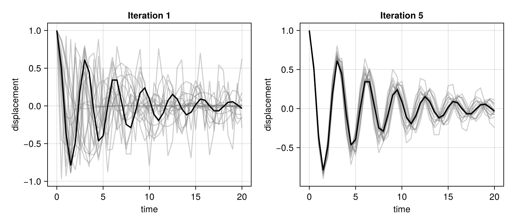

Calibration Tutorial
This tutorial runs a complete calibration end to end, and then shows the three lines that change to distribute it across Julia workers.
The model is a damped harmonic oscillator. Its displacement is $x(t) = e^{-\gamma t}\cos(\omega t)$, and we calibrate the damping rate $\gamma$ and the angular frequency $\omega$ against a trajectory generated from known values. Any forward model would do: ClimaCalibrate calls only forward_model and observation_map.
import ClimaCalibrate as CAL
import EnsembleKalmanProcesses as EKP
import EnsembleKalmanProcesses.ParameterDistributions:
combine_distributions, constrained_gaussian
import Statistics
import CairoMakieWhere the model code lives
The forward model and the model interface go in their own file. That is what lets a worker or a scheduler job load them: both start as fresh Julia processes, and an HPCBackend job script includes this file directly.
model_file =
joinpath(pkgdir(CAL), "docs", "src", "assets", "damped_oscillator.jl")
include(model_file)# Model code for the Calibration Tutorial.
#
# The forward model and the model interface live in their own file, which is
# what a worker or a scheduler job loads to run an ensemble member.
import ClimaCalibrate
import JLD2
import TOML
"""
DampedOscillator(output_dir, ensemble_size, t)
Model interface for a damped harmonic oscillator.
The forward model and the observation map read their configuration from these
fields, so the same object can be used on a worker or serialized into an HPC job
script.
"""
struct DampedOscillator <: ClimaCalibrate.AbstractModelInterface
"""Where the calibration writes its output."""
output_dir::String
"""Number of ensemble members."""
ensemble_size::Int
"""Times at which the oscillator's displacement is observed."""
t::Vector{Float64}
end
"""
solve_oscillator(damping, frequency, t)
Displacement of a unit-amplitude damped oscillator at times `t`.
"""
solve_oscillator(damping, frequency, t) =
@. exp(-damping * t) * cos(frequency * t)
"""
ClimaCalibrate.forward_model(interface::DampedOscillator, iteration, member)
Run the oscillator with this member's parameters and save its displacement.
`forward_model` only receives the iteration and member numbers, so it reads the
parameters EKP drew for this member from the file ClimaCalibrate wrote, and
writes its output under the member's own directory.
"""
function ClimaCalibrate.forward_model(
interface::DampedOscillator,
iteration,
member,
)
(; output_dir, t) = interface
member_path =
ClimaCalibrate.path_to_ensemble_member(output_dir, iteration, member)
parameters = TOML.parsefile(
ClimaCalibrate.parameter_path(output_dir, iteration, member),
)
damping = parameters["damping"]["value"]
frequency = parameters["frequency"]["value"]
displacement = solve_oscillator(damping, frequency, t)
JLD2.save_object(joinpath(member_path, "displacement.jld2"), displacement)
return displacement
end
"""
ClimaCalibrate.observation_map(interface::DampedOscillator, iteration)
Collect every member's displacement into the G ensemble matrix.
Column `m` holds member `m`'s output, in the same order as the observation. A
member whose forward model failed leaves a column of `NaN`s, which is how EKP is
told to ignore it.
"""
function ClimaCalibrate.observation_map(interface::DampedOscillator, iteration)
(; output_dir, ensemble_size, t) = interface
G_ensemble = fill(NaN, length(t), ensemble_size)
for m in 1:ensemble_size
member_path =
ClimaCalibrate.path_to_ensemble_member(output_dir, iteration, m)
output = joinpath(member_path, "displacement.jld2")
isfile(output) || continue
G_ensemble[:, m] .= JLD2.load_object(output)
end
return G_ensemble
endforward_model and observation_map receive only the iteration and member numbers. They read the output directory, the ensemble size, and the observation times from the fields of DampedOscillator. That configuration travels with the interface, so the same code works on a worker or inside a job script, where a global defined in your session will not exist.
forward_model reads its parameters from the file ClimaCalibrate wrote for that member, at parameter_path.
The prior
Every parameter being calibrated needs a prior. constrained_gaussian takes a name, a mean, a standard deviation, and lower and upper bounds, and gives back a distribution that respects those bounds.
prior = combine_distributions([
constrained_gaussian("damping", 0.3, 0.3, 0, Inf),
constrained_gaussian("frequency", 2.5, 1.5, 0, Inf),
])ParameterDistribution with 2 entries
'damping': Parameterized (Normal) [1 constraint]
'frequency': Parameterized (Normal) [1 constraint]
The observation
This is a perfect-model experiment: the observation comes from the forward model itself, run with the parameters we want the calibration to recover.
t = collect(0.0:0.5:20.0)
true_damping, true_frequency = 0.15, 2.0
observation = solve_oscillator(true_damping, true_frequency, t)41-element Vector{Float64}:
1.0
0.5012619449174641
-0.35818090158018023
-0.7905250649855431
-0.4842311041681364
0.19495797886729177
0.6122316051190211
0.4459749227650169
-0.07985211160624137
-0.463907822848421
⋮
0.07567903585136633
-0.0011174107471831273
-0.06625778077423831
-0.06546324377057568
-0.008599865373479933
0.04772316558971468
0.05524558632537297
0.014309310815802972
-0.033204890872611824The noise covariance says how much of the mismatch between model and observation to attribute to error rather than to the parameters. Here the observation is noise-free, so any small value will do; with real data this is the part that deserves care, and the Observations page covers it.
noise = 0.01 * EKP.I(length(t))41×41 LinearAlgebra.Diagonal{Float64, Vector{Float64}}:
0.01 ⋅ ⋅ ⋅ ⋅ ⋅ … ⋅ ⋅ ⋅ ⋅ ⋅ ⋅
⋅ 0.01 ⋅ ⋅ ⋅ ⋅ ⋅ ⋅ ⋅ ⋅ ⋅ ⋅
⋅ ⋅ 0.01 ⋅ ⋅ ⋅ ⋅ ⋅ ⋅ ⋅ ⋅ ⋅
⋅ ⋅ ⋅ 0.01 ⋅ ⋅ ⋅ ⋅ ⋅ ⋅ ⋅ ⋅
⋅ ⋅ ⋅ ⋅ 0.01 ⋅ ⋅ ⋅ ⋅ ⋅ ⋅ ⋅
⋅ ⋅ ⋅ ⋅ ⋅ 0.01 … ⋅ ⋅ ⋅ ⋅ ⋅ ⋅
⋅ ⋅ ⋅ ⋅ ⋅ ⋅ ⋅ ⋅ ⋅ ⋅ ⋅ ⋅
⋅ ⋅ ⋅ ⋅ ⋅ ⋅ ⋅ ⋅ ⋅ ⋅ ⋅ ⋅
⋅ ⋅ ⋅ ⋅ ⋅ ⋅ ⋅ ⋅ ⋅ ⋅ ⋅ ⋅
⋅ ⋅ ⋅ ⋅ ⋅ ⋅ ⋅ ⋅ ⋅ ⋅ ⋅ ⋅
⋮ ⋮ ⋱ ⋮ ⋮
⋅ ⋅ ⋅ ⋅ ⋅ ⋅ ⋅ ⋅ ⋅ ⋅ ⋅ ⋅
⋅ ⋅ ⋅ ⋅ ⋅ ⋅ ⋅ ⋅ ⋅ ⋅ ⋅ ⋅
⋅ ⋅ ⋅ ⋅ ⋅ ⋅ ⋅ ⋅ ⋅ ⋅ ⋅ ⋅
⋅ ⋅ ⋅ ⋅ ⋅ ⋅ … 0.01 ⋅ ⋅ ⋅ ⋅ ⋅
⋅ ⋅ ⋅ ⋅ ⋅ ⋅ ⋅ 0.01 ⋅ ⋅ ⋅ ⋅
⋅ ⋅ ⋅ ⋅ ⋅ ⋅ ⋅ ⋅ 0.01 ⋅ ⋅ ⋅
⋅ ⋅ ⋅ ⋅ ⋅ ⋅ ⋅ ⋅ ⋅ 0.01 ⋅ ⋅
⋅ ⋅ ⋅ ⋅ ⋅ ⋅ ⋅ ⋅ ⋅ ⋅ 0.01 ⋅
⋅ ⋅ ⋅ ⋅ ⋅ ⋅ … ⋅ ⋅ ⋅ ⋅ ⋅ 0.01Putting it together
calibrate needs a backend, an EnsembleKalmanProcess, a model interface, a number of iterations, the prior, and an output directory.
ensemble_size = 20
n_iterations = 8
output_dir = mktempdir()
interface = DampedOscillator(output_dir, ensemble_size, t)
ekp = EKP.EnsembleKalmanProcess(
EKP.construct_initial_ensemble(prior, ensemble_size),
observation,
noise,
EKP.Inversion(),
)
ekp = CAL.calibrate(
CAL.JuliaBackend(),
ekp,
interface,
n_iterations,
prior,
output_dir,
)EnsembleKalmanProcess
process : Inversion
N_ens : 20
N_par : 2
n_iter : 5
scheduler : DataMisfitController
accelerator: NesterovAccelerator
Results
The ensemble mean should have moved towards the values the observation was generated with.
final = EKP.get_ϕ_mean_final(prior, ekp)
(; damping = final[1], frequency = final[2]), (true_damping, true_frequency)((damping = 0.11969449922755798, frequency = 2.0082604311711822), (0.15, 2.0))The calibration can stop before n_iterations if EKP's scheduler decides it has converged, so ask the object how many iterations it ran.
completed = EKP.get_N_iterations(ekp)5The spread across the ensemble contracts as the data constrains the parameters:
spread =
[Statistics.var(EKP.get_ϕ(prior, ekp, i), dims = 2) for i in 1:completed]
first(spread), last(spread)([0.10167918938619562; 1.5559834997308373;;], [0.000495149335588102; 0.0027838182975020117;;])Plotting the ensemble against the observation shows the same thing. The final iteration's members bracket the observation much more tightly than the first.
fig = CairoMakie.Figure(size = (800, 350))
for (col, iter) in enumerate((1, completed))
ax = CairoMakie.Axis(
fig[1, col],
title = "Iteration $iter",
xlabel = "time",
ylabel = "displacement",
)
G = EKP.get_g(ekp, iter)
for m in axes(G, 2)
CairoMakie.lines!(ax, t, G[:, m], color = (:grey, 0.4))
end
CairoMakie.lines!(ax, t, observation, color = :black, linewidth = 2)
end
fig
Running the ensemble in parallel
JuliaBackend runs the ensemble members one after another, which is enough while debugging and for a closed-form model like this one. For a forward model that takes minutes or hours, swap in a backend that runs the members at the same time. Nothing else about the calibration changes.
To spread the members across Julia workers, add the workers, load the model code on them, and pass a WorkerBackend:
using Distributed
## `cluster = :local` starts workers as local processes; on a cluster, omit it
## and each worker is requested from the scheduler as its own allocation
wait(CAL.add_workers(4; cluster = :local))
## Use `@worker_setup` rather than `Distributed.@everywhere`: workers join
## asynchronously, so `@everywhere` would miss any that connect later and
## leave them without the model code
CAL.@worker_setup include($model_file)
ekp = CAL.calibrate(
CAL.WorkerBackend(),
ekp,
interface,
n_iterations,
prior,
output_dir,
)Documenter captures the output of each executed block, which deadlocks against Distributed's message handling. The code above is what to run in a script or the REPL; it is not run while this page is built.
To submit one scheduler job per ensemble member instead, pass an HPCBackend such as CAL.CaltechHPCBackend(; directives = ...). That backend also needs model_interface_filepath implemented on the interface, so its job scripts know which file to include.
Where to go next
- Backends explains how to choose between these and how to move a working calibration onto a cluster.
- Troubleshooting covers what to do when a calibration does not converge, or fails partway through.
- The Observations page covers building observations and noise covariances from real data.
This page was generated using Literate.jl.